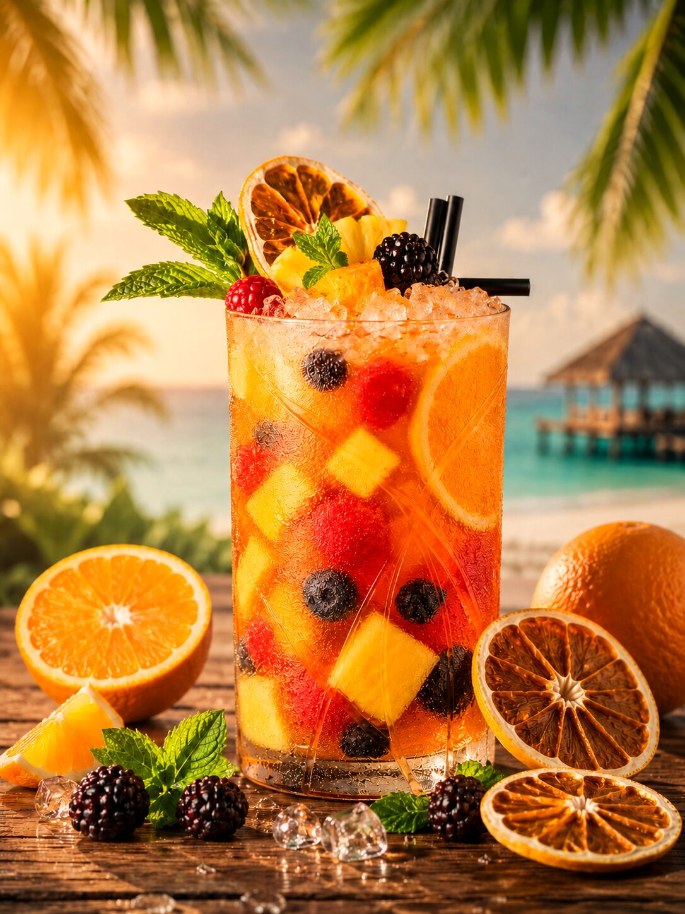

Syf Planteur™
Mangue • Passion • Ananas
L'esprit des tropiques dans un coucher de soleil liquide. Mangue mûre, passion acidulée, ananas rôti. Le best-seller qui a donné sa couleur à SYFIR.
Où le trouver →La collection
Deux façons de les vivre : sur place, servi dans le verre SYFIR — ou à emporter, dans notre pochette signature scellée. Goûte à la liberté.
Mangue • Passion • Ananas
L'esprit des tropiques dans un coucher de soleil liquide. Mangue mûre, passion acidulée, ananas rôti. Le best-seller qui a donné sa couleur à SYFIR.
Où le trouver →
Agrumes • Hibiscus • Fruits rouges
Agrumes vifs, hibiscus, fruits rouges. La fraîcheur qui réveille la piste.
Où le trouver →
Citron vert • Passion • Fruits exotiques
Citron vert, passion, fruits exotiques. La golden hour en pochette.
Où le trouver →L'abus d'alcool est dangereux pour la santé. À consommer avec modération. Vente interdite aux mineurs.
L'histoire du Planteur

Mangue mûre, passion acidulée, ananas rôti — choisis pour le goût, pas pour la photo.
Le format liberté : mobile, prêt à te suivre là où ça se passe.

Servi dans le verre SYFIR, ou tel quel à emporter — c'est toi qui choisis.

Plage, rooftop, golden hour — le Planteur voyage avec toi.

Un instant, deux verres, la liberté de trinquer. Goûte à la liberté.
